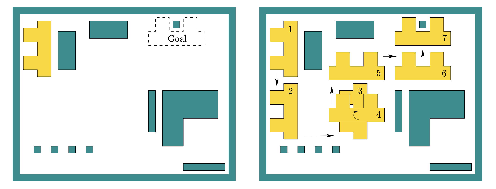
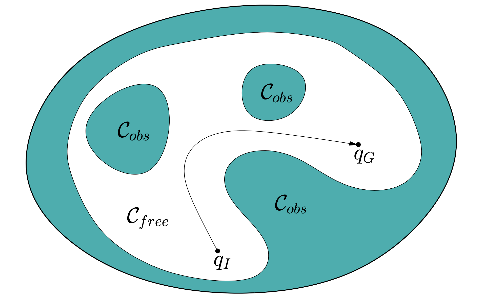
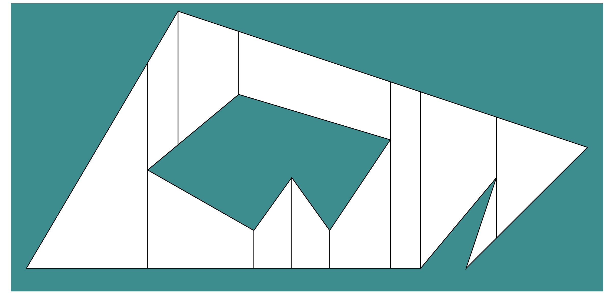
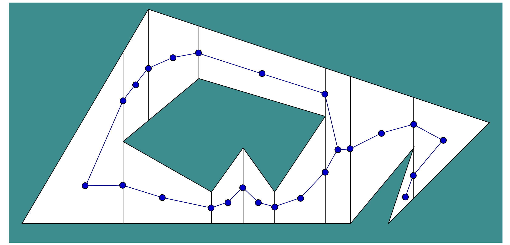
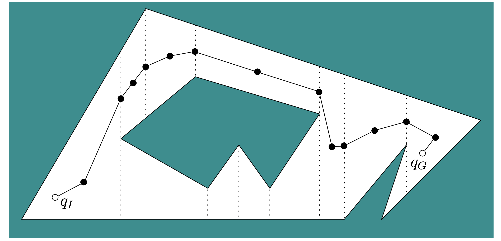
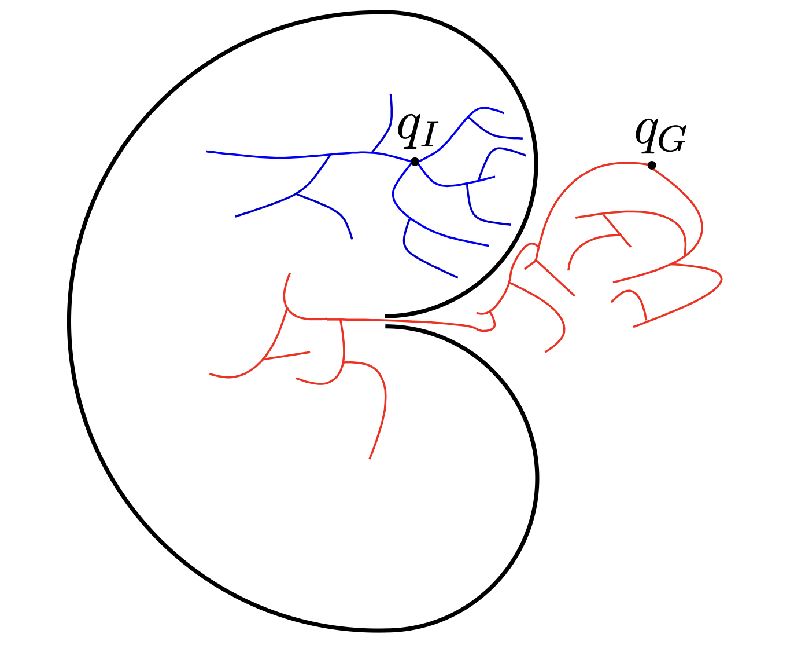

This is my notes on LaValle’s two tutorial papers [1], [2] about motion planning. Please note that this is my first time learning motion planning, my notes might not be articulate.
Part 1: The Basics
Let \(\mathcal{W}=\mathbb{R}^2\) denote the world, \(\mathcal{O}\subset\mathcal{W}\) denote the obstacle region, which has piecewise-linear (polygonal) boundary. The robot is a rigid polygon that move through the world. A basic path planning problem is as: Given an initial placement of the robot, compute how to gradually move it into a goal placement so that it never touches the obstacle region.

A 2D example of motion planning [1].
Living in C-space
Although the motion plannign problem is described in tho world, it is actually in another space: The set of all rigid-body transformations. This is called the configuration space or C-space.
For example, consider a 2D rigid motion problem. Let \(\mathcal{A}\subset\mathbb{R}^2\) denote a polygonal robot, we could rotate the robot counter-clockwise by \(\theta\in[0,2\pi)\), then translate by \((x_t,y_t)\). Let \(q=(x_t,y_t,\theta)\) be called the configuration, every combination of configuration leads to a unique robot placement. A point \((x,y)\in\mathcal{A}\) would be transformed to \((x^\prime,y^\prime)\in\mathcal{W}\) given by $$ \begin{pmatrix} x^\prime\\y^\prime\\1 \end{pmatrix}= \underbrace{\begin{pmatrix} \cos\theta&-\sin\theta&x_t\\ \sin\theta&\cos\theta&y_t\\ 0&0&1 \end{pmatrix}}_{\text{SE}(2)} \begin{pmatrix} x\\y\\1 \end{pmatrix} $$
Configuration is the robot’s pose in SLAM, just another name here. Similarly, C-space is the variable pose space in SLAM, e.g., SE(2), SO(3), and SE(3). I think the difference is in SLAM, we usually consider the robot as a single point \(q\), while here we consider the robot as a region (set of poses) \(\mathcal{A}(q)\).

An example of C-space with initial configuration \(q_I\) and goal configuration \(q_G\) [1].
Let \(\mathcal{A}(q)\subset\mathcal{W}\) denote a closed set of points occupied by the robot. We want to avoid the robot and obstacle occupied the same point.
- free space: \(C_\text{free}=\{q\in C\mid\mathcal{A}(q)\cap\mathcal{O}=\emptyset\}\)
- obstacle region: \(C_\text{obs}=C\backslash C_\text{free}\)
There are manily two strategies:
- Combinatorial planning constructs structures in the C-space that captures all information needed to perform planning.
- Sampling-based planning uses collision detection algorithms to probe and incrementally search the C-space for a solution, rather than characterizing C-space.
Combinatorial planning
We first compute a roadmap, which a graph in which each vertex is a configuration in \(C_\text{free}\) and each edge is a “simple” path through \(C_\text{free}\) that connects a pair of vertices. Consider the case where \(\mathcal{W}=\mathbb{R}^2\) with a point robot \(\mathcal{A}={(0,0)}\) that cannot rotate, i.e., \(C=\mathbb{R}^2\) (only 2D translation). Here are the steps of a simple example:
Combinitorial planning illustration (a) [1].
- Decompose \(C_\text{free}\) into trapezoids with vertical side segment. From each polygon vertix of \(C_\text{free}\), we shoot a ray upward/downward until hitting an obstacle.

Combinitorial planning illustration (b) [1].
- Place one vertex at the interior of every trapezoid, here we place it at the centroid.
- Place one vertex at every vertical segment, here we place it at the center.

Combinitorial planning illustration (c) [1].
- Connect each vertex.

Combinitorial planning illustration (d) [1].
Note that the roadmap is constructed without the information of \(q_I\) and \(q_G\). That is, once the roadmap is made, it can be used for all motion planning problems. To finish the planning problem, connect \(q_I\) and \(q_G\) to the vertices in their trpaezoids, respectively, then search the shortest path from \(q_I\) to \(q_G\).
Roadmaps are expected to have two properties:
- accessibility simple to reach the roadmap from any \(q\in C_\text{free}\)
- connectivity for any \(q_1,q_2\) connected to the roadmap, a path exists between them
Combinatorial planning construct a discrete representation that captures the exact solution without approximation or sampling errors. However, the nice combinatorial planning ideas we use may be hard to extend when the problem becomes more complicated.
Sampling-based planning
Since real-world problems may be hard to characterize \(C_\text{free}\) and \(C_\text{obs}\), sampling-based approach search in a small neighbor around it, and does not need to compute the full map. We give an example of a frequently used method based on rapidly exploring random trees (RRTs). The idea is to incrementally explore the \(C_\text{free}\) from an initial configuration \(q_0\). The explore territory is marked by a tree \(T\) rooted at \(q_0\). In each iteration, RRT picks a random point in C-space (not \(C_\text{free}\) only), then tries to connect it to the tree.
-
Generate a random \(q_\text{rand}\in C\) (what is random SE(2)? see Haar measuer).
If \(q_\text{rand}\in C_\text{obs}\), return to step 1.
-
Find \(q_\text{near}\in T\), the nearest point in the tree to \(q_\text{rand}\) (by some distance metric).
If \(\overline{q_\text{rand}q_\text{near}}\cap C_\text{obs}\neq\emptyset\), return to step 1.
-
Connect \(q_\text{rand}\) and \(q_\text{near}\), return to step 1.
Note that we did not use the information of \(q_G\). A simple adaption would be forcing \(q_\text{rand}=q_G\) every 100 iterations. In practice, we might occur bug traps that is difficult to escape. Another popular and effective strategy is bidirectional search, where we grow two RRTs, rooted at \(q_I\) and \(q_G\), respectively, and we try to extend each tree toward the newest vertex of the other tree.

Bug trap example [1].
A common nuisance with sampling-based approach is that the path are jagged, thereby path smoothing is performed to produce a cleaner path. A simple method is to iteratively pick a pair of point and try to replace the path between them with a straitght line.
Combinatorial planning approach solves simpler problems in a clean, elegant way, but the running time is too high for industrial-grade problems.
Sampling-based planning approach provides practical solutions for real-world problems, but offers weaker guarantees.
Extensions
Multiple rigid bodies Up to this point, we have been discussing only a rigid body. That is, there is only at most 3 DoF for SE(2) or 6 DoF for SE(3). We could have more DoF if we allow multiple rigid bodies, for example, robot with multiple joints. One strategy would be the decoupled approach.
Closed kinematic chain This is when a collection of articulated bodies form a loop, where the loop closure constraint would be difficult to maintain.
Manipulation problems This is a more general problem that requires robots to grasp or carry something, for example some boxes. The DoF of the boxes should also be considered. One strategy is to differentiate two modes, the transit mode when not carrying some boxes, and the trasfer mode when carrying some boxes.
Moving obstacles This problem allows obstacles to move, for example, the Pursuit–evasion game [3]. In general, we include the time variable to the problem.
Part 2: The Challenges
to be complete
Reference
[1] S. M. LaValle. (2011). Motion planning: The essentials. IEEE Robotics and Automation Society Magazine, 18(1):79-89.
[2] S. M. LaValle. (2011). Motion planning: Wild frontiers. IEEE Robotics and Automation Society Magazine, 18(2):108-118.
[3] Weintraub, I. E., Pachter, M., & Garcia, E. (2020, July). An introduction to pursuit-evasion differential games. In 2020 American Control Conference (ACC) (pp. 1049-1066). IEEE.